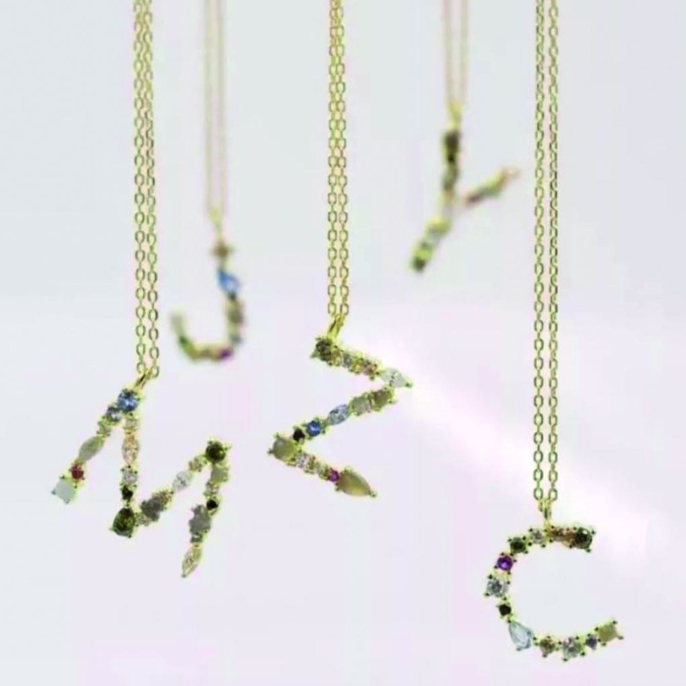
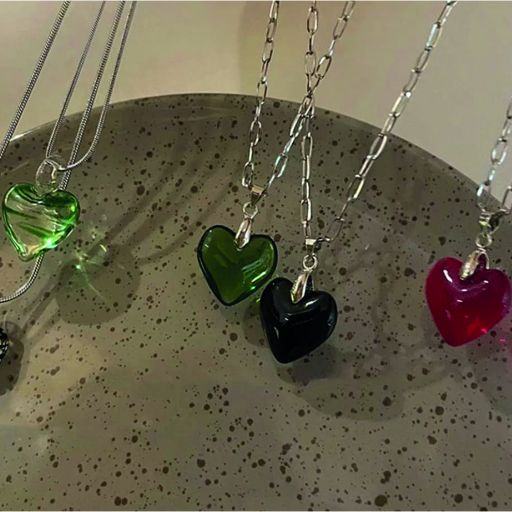
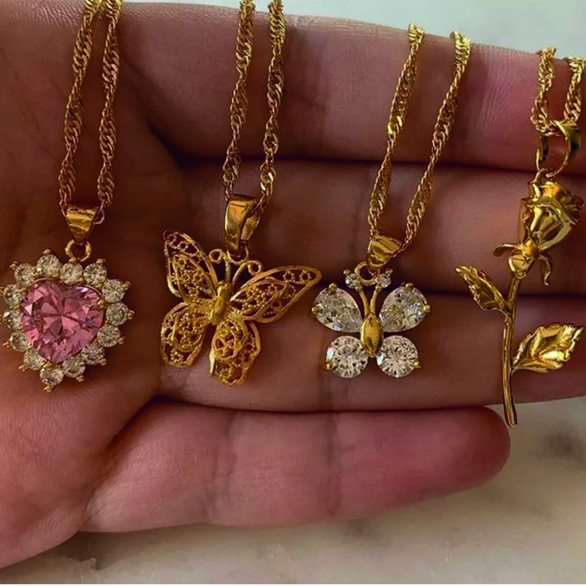
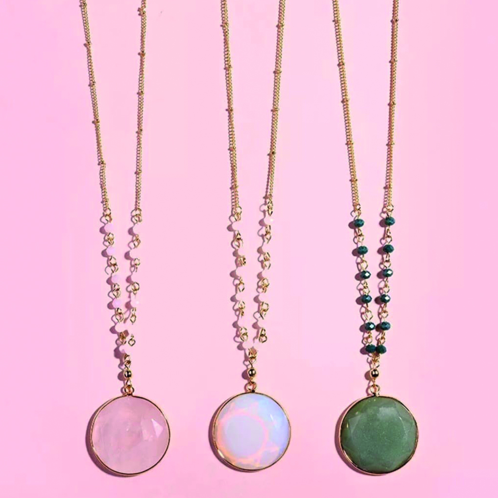
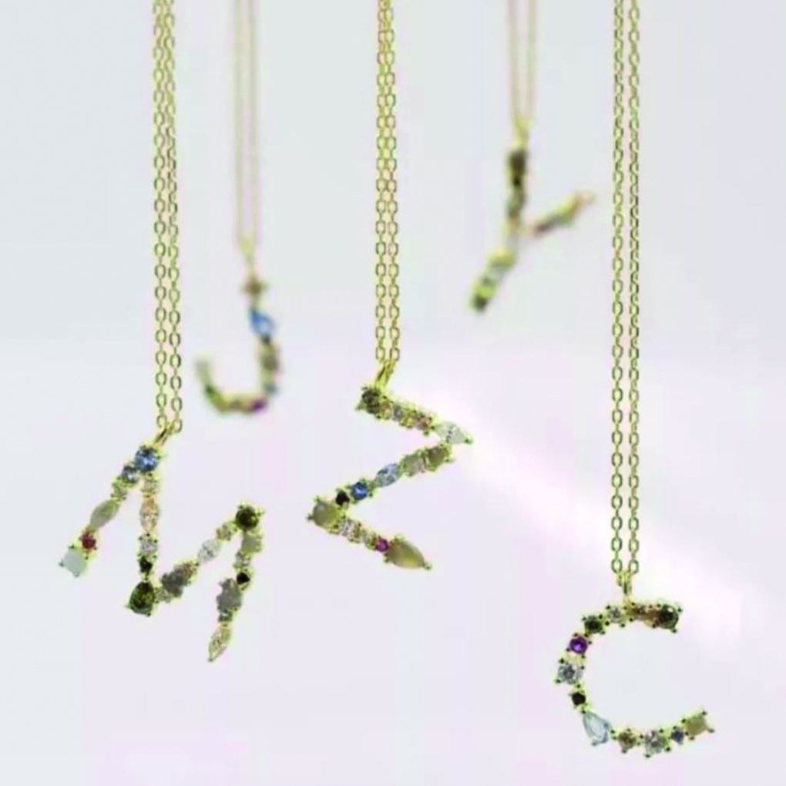
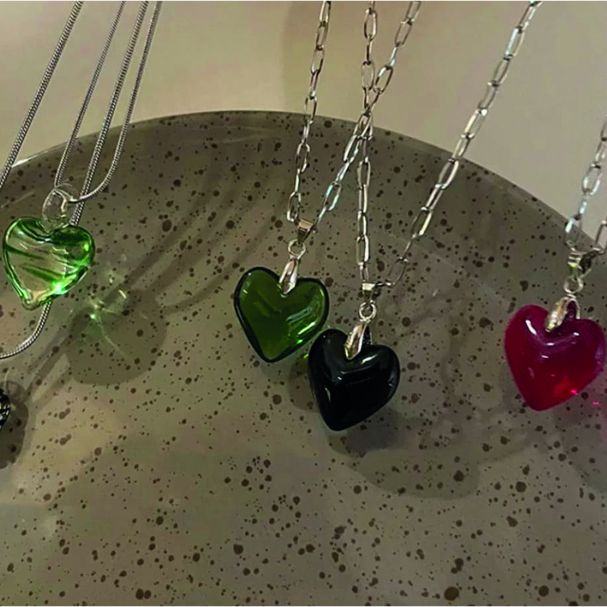
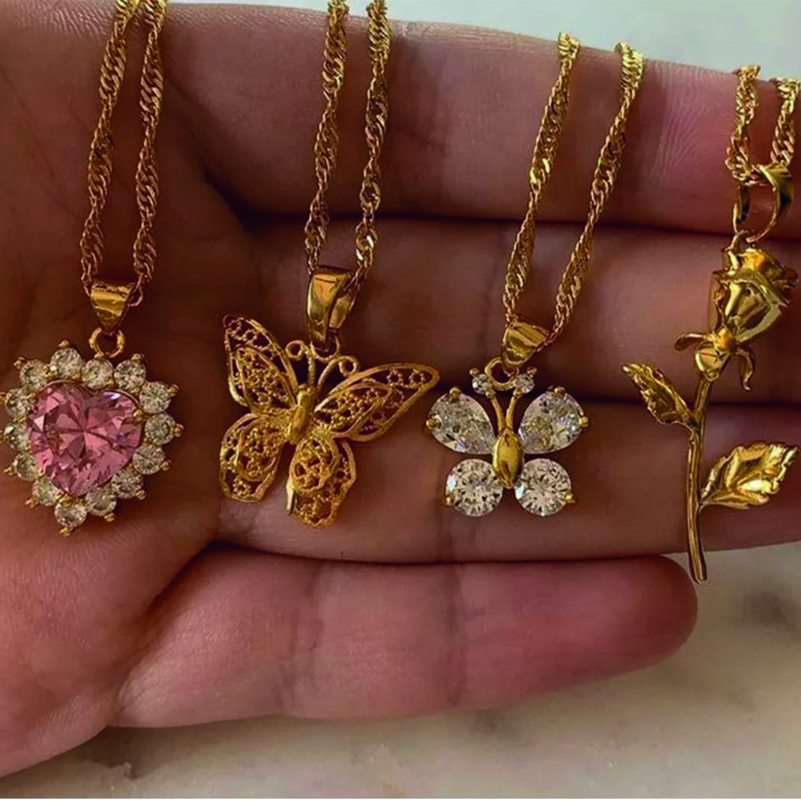
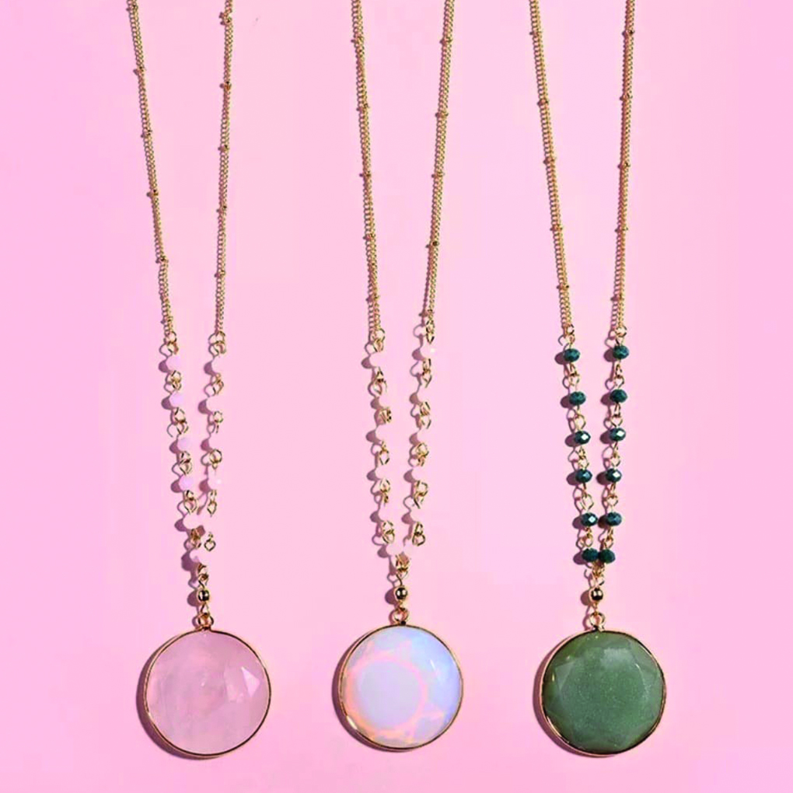

Gofi Jewelry
Customizable Special Jewelry
 







Necklaces
The oldest known example of a necklace dates back 5000 years and was prepared with completely natural materials. Until they learned to process metal, necklaces obtained from animal nerves or vine plants in this way became more ornate over time, enriched with feathers, natural stones, shells and knitting techniques, and were used to bring good luck. When he learned to process metal, chains began to be produced and this was reflected in the necklaces. E As in Ancient Egypt, the Romans and Greeks also wore various talismans on the chain necklace to protect themselves from bad energies. The necklace was used as a symbol of power and authority in the Middle Ages. In the following periods, necklaces, which started to be a jewelry preferred by noble families, were used as social status-determining accessories. Now, the material of the necklace is optionally selected and if there is a stone in the design, diamond, emerald or ruby options are added. Depending on the options, the price of the necklace also varies.
You can get more information about necklaces from us by using the button below.